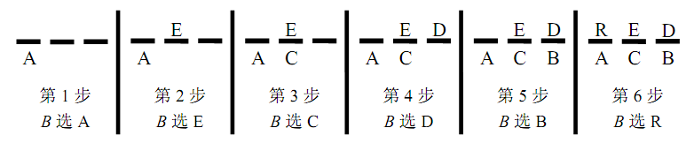

“猜单词”是一个双人游戏，在伊朗的青年学生中广为流行。假设有两个游戏者A和B，A作
为先手，首先在一个双方都知道的语料库中选出一个单词，并记在脑海中。随后，他在一张
小纸片上划下与单词字母数相等的小横线（不妨设为n条）。接下来，B尝试猜出这个单词。
每一轮，B选择一个字母并告诉 A。A按如下规则回应：若B 所说的字母在单词中出现，A就
把它写在对应的横线上。如果整个单词已经完整（所有的字母已经被猜出），B获胜。否则
，如果字母没有在单词中出现，A就把它写在最左侧的下方仍为空白的横线下。如果所有横
线下的空白处都已经有字母（也就是说，在这一轮前B已经猜了n个错误字母），那么B就输
了，A 获胜。例如，A 从语料库中选出了单词RED，且B已经依次猜了字母 A, E, C, D, B和
R。每一步的结果都在下图中展现。最终B 获胜。但如果B 在最后一步猜了S而不是R，他就
输了。

Aidin 是猜单词游戏迷。他相信，如果给定的语料库足够大，且其中的单词相对好，那么玩
家 A（先手）可以采取一种不公平的行动——修改选择的单词。也就是说，既然玩家 A 只
将单词记在脑海中而不写下来，那他能够在游戏过程中随时变化这个单词，只要使得和当前
已经给出的结果仍然一致即可。例如，在上面的游戏中，如果单词RED, BED, LED和TED都在
语料库中，那么在第4步之后，A就可以确信他将胜利。他将总是把B给出的字母写在横线下
（也就是认定其为错误的字母），那么每一次他将至多在集合 {RED, BED, LED, TED} 中
失去一个备选单词。最终他将向 B 宣布：“这个单词是，嗯，??”，然后在他的集合中说
出一个剩下的单词。Aidin 想，如果语料库足够好，那么 A 甚至可能在游戏一开始就确定
获胜。例如，如果选择的单词长度为2，而集合{ME, MD, DE, ED, AS, IS, AI, SI}中的单
词都在语料库中，那么A 总能获胜。请自己找出A 获胜的策略。给定一个语料库，Aidin想
知道是否无论B如何进行游戏，玩家A一定能获胜？请注意在任何一次游戏结束时，如果A获
胜，A需要能够给出一个语料库中的单词作为被选出的单词，这个单词应当与A所有给出的回
答一致。